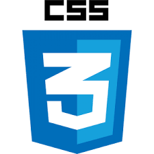

AS TECNOLOGIAS DO FRONT-END
HTML

HTML(Linguagem de Marcação de HiperTexto) é o bloco de construção mais básico da web. Define o significado e a estrutura do conteúdo da web. Outras tecnologias além do HTML geralmente são usadas para descrever a aparência/apresentação (CSS) ou a funcionalidade/comportamento (JavaScript) de uma página da web.
"Hipertexto" refere-se aos links que conectam páginas da Web entre si, seja dentro de um único site ou entre sites. Links são um aspecto fundamental da web. Ao carregar conteúdo na Internet e vinculá-lo a páginas criadas por outras pessoas, você se torna um participante ativo na world wide web.
click aqui para saber mais sobre HtmlCSS
CSS (Cascading Style Sheets ou Folhas de Estilo em Cascata) é uma linguagem de estilo (en-US) usada para descrever a apresentação de um documento escrito em HTML ou em XML (incluindo várias linguagens em XML como SVG, MathML ou XHTML). O CSS descreve como elementos são mostrados na tela, no papel, na fala ou em outras mídias.
CSS é uma das principais linguagens da open web e é padronizada em navagadores web de acordo com as especificação da W3C. Desenvolvido em níveis, o CSS1 está atualmente obsoleto, o CSS2.1 é uma recomendação e o CSS3, agora dividido em pequenos módulos, está progredindo para a sua padronização.
click aqui para saber mais sobre CSSJAVASCRIPT

Javascript (às vezes abreviado para JS) é uma linguagem leve, interpretada e baseada em objetos com funções de primeira classe, mais conhecida como a linguagem de script para páginas Web, mas usada também em vários outros ambientes sem browser, tais como node.js, Apache CouchDB e Adobe Acrobat. O JavaScript é uma linguagem baseada em protótipos, multi-paradigma e dinâmica, suportando estilos de orientação a objetos, imperativos e declarativos (como por exemplo a programação funcional).
Não se deve confundir o JavaScript com a linguagem de programação Java. Tanto Java quanto JavaScript são marcas registradas da Oracle nos Estados Unidos da América e em outros países. No entanto, as duas linguagens de programação possuem sintaxe, semânticas e usos muito diferentes. click aqui para saber mais sobre Javascript